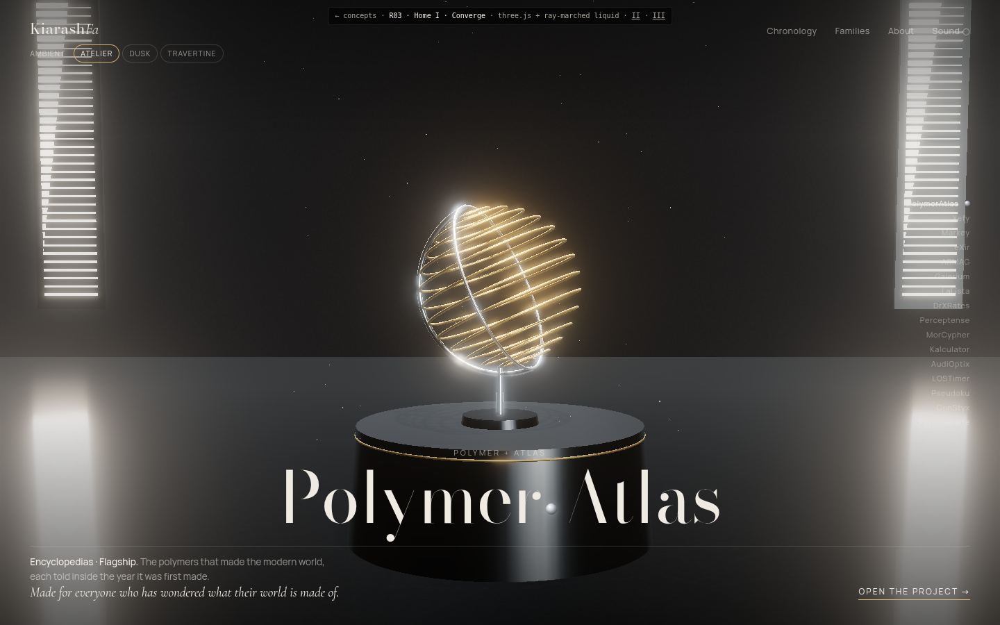

I
Converge
Scroll, and the two words become one.
scroll-scrubbedthree.js + ray-marched liquidopens in Atelier
- Fusion
- Each word rides its own droplet. They meet, fuse into one bead, pour into the object's exact shape, then the metal cools into the real sculpture.
- Text
- The name sets in a Didone with a mercury dot at the join; the index of every project runs down the right.
Open →scroll slowly